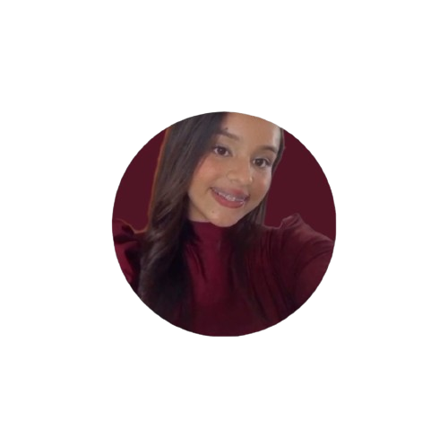

Bruna Santos.
Olá! sou técnica em informática até aqui andei uma longa caminhada , mas todo esforço tem uma recompensa então levo a vida com a seguinte frase: "Se você não puder fazer isso, se não estiver disposto a continuar procurando por luz nos lugares mais escuros mesmo quando parecer impossível, nunca terá sucesso." Grey's anatomy
